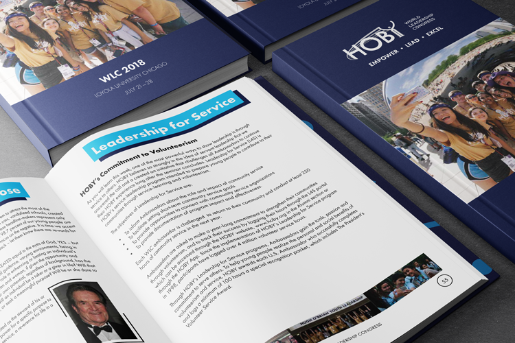

Creating the brand to impact the lives of over 400 global leaders.
Company
Hugh O'Brian Youth Leadership
Year
2018-19
Team
Design Manager
Operations
Graphic Design
The Hugh O’Brian Youth Leadership (HOBY) World Leadership Congress (WLC) is an annual leadership conference held in Chicago, IL for Grade 10 students from around the world. As Design Manager I collaborated with our team lead to build the brand, conference materials (guidebooks, banners, programs, store items), social media items, and more!
The challenge

Let's start with some background. HOBY was started back in 1958 by actor Hugh O'Brian, with the mission to inspire a global community of youth and volunteers to a life dedicated to leadership, service, and innovation. Since starting in California, it has grown across the globe, with thousands of grade 10 students experiencing their leadership seminars each year. I was fortunate enough to have attended when I was in grade 10, and continued to volunteer with HOBY and in my community since then.
The HOBY WLC has been held annually since 1968. It is a global leadership seminar, with students and volunteers attending from around the world to hear from top speakers, and learn from one another. Each year, WLC hosts around 400 student ambassadors, and is organized by over 100 volunteers. I had volunteered with HOBY in a variety of roles before working as the Design Manager for WLC, but this project was definitely something exciting!
Some of my progress

The Marketing & Publicity (M&P) Team at WLC typically consists of around 6 people (1 Lead, 2 Photographers, 2 Designers), and we make all of the brand materials, merchandise, social media items, and any other assets used by the other teams at WLC. In January, the Leadership Team (Chair & Vice-Chairs) organizes the tone and tagline of the event. From there, the M&P Team gets to brainstorming design, brand, and any interesting ideas!
I'm a big fan of sketching things out. I challenge myself to sketch out lots of ideas and options, find the best solutions, and roll from there. Above, you'll see some of my rough work towards logo design, t-shirt design, and our program book.
Above are the logos that myself and the M&P Team created in 2018 and 2019! These designs help to round the tone of WLC, and guide our creations to follow.
My Solution
The following are some of the cool things I worked on for both WLC 2018 & WLC 2019
Program Book
Tools Used: InDesign, Google Docs, Photoshop, Illustrator
The Program Book for WLC serves as the schedule, notebook, and overall guide to the seminar for both Ambassadors and Staff. Creating this project requires a strong coordination between the Program Team (who plan all of the events), and the M&P Team.
Store Sales
Tools Used: Photoshop, Illustrator, Google Sheets, InDesign
Another important project of WLC is the HOBY Store. Merch, items, and other souvenirs are sold to Ambassadors and Staff, and serves as a great opportunity to reduce costs to the WLC, and help support scholarships for students to attend WLC.
Here are just a few of the designs I made to sell in the HOBY Store. This project stared with brainstorming which items we would like to sell in the store, then communicating with our print partners, and searching through their print catalogue. After finding items that serve our price and quality needs, I worked with them to ensure they had all of the right designs and assets for print. All of this work needed to be greatly organized and planned, as the M&P Team worked with a tight budget.

This leads to organizing lots of sales and financials of the HOBY Store. Prior to my time organizing the HOBY Store, there was a spreadsheet to organize sales, but it didn't quite meet all the ends we needed to organize the store, and more importantly it didn't quite meet the needs of the Leadership Team to plan the viability of the store. I took this opportunity to organize the HOBY Store's financials as well as inventory tracking. On a daily basis, we could have a snapshot of how our stock was performing, see if we've reached our break targets, and then plan promotions or any other shifts throughout the week. One example of this is that my spreadsheet had outlined that we sold a dramatic amount of one item, and the M&P Team took the chance to rush order more inventory of the item, leading to more sales and profit for WLC to utilize next year. In total, my designs and organization helped to bring in over $7,000 profit over the course of one week.
T-Shirts
Tools Used: Illustrator

Another project of the WLC is to design t-shirts for all Ambassadors and Staff to wear throughout the week. These designs are motivated by the WLC brand, and will serve to both identify people, as well as serve as a visual identity for the conference on days such as volunteering in Humboldt Park.
Newsletters
Tools Used: Mailchimp, Illustrator, InDesign

Another important task of WLC is getting Staff informed and excited for WLC! To complete these newsletters, I organized designs in Illustrator, then made mock-ups in InDesign, and after approval, I made them in Mailchimp to be sent out to Staff.
What I learned

Through my time volunteering with WLC, I've learned that organization is key for these large scale projects. It's enticing to just dive into a project, but instead it's more worthwhile to breakdown a project to the core needs, and plan out deliverables.
I've also learned that an important quality in a team is to remove the ego from design. Personally, I sometimes felt that my devotion to teams were self-serving, but working as the Design Manager for WLC taught me that with a talented team motivated by a common good, anything can be accomplished!